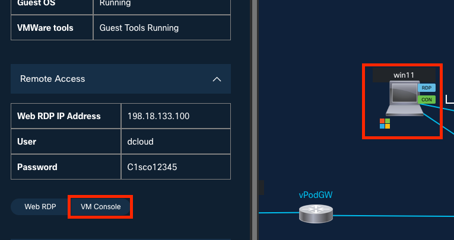
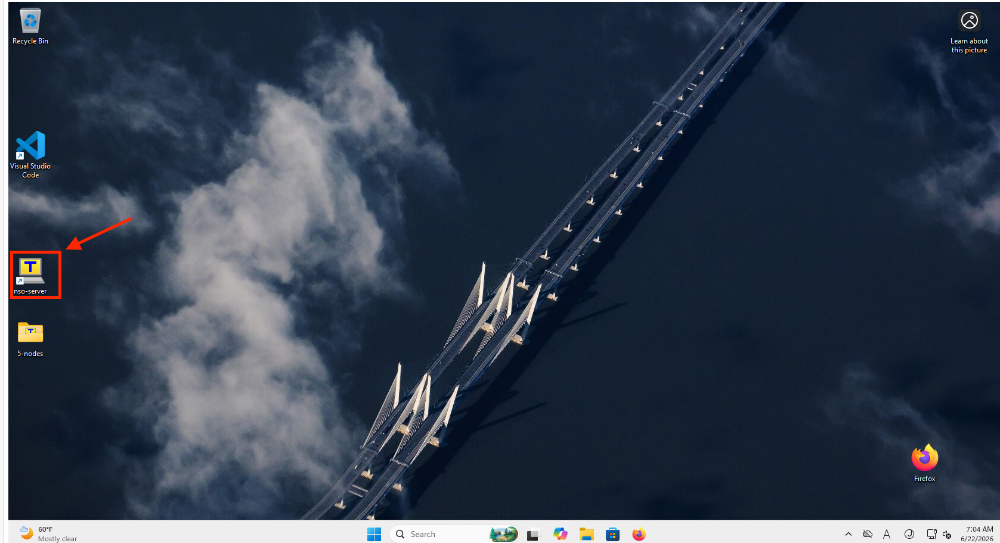
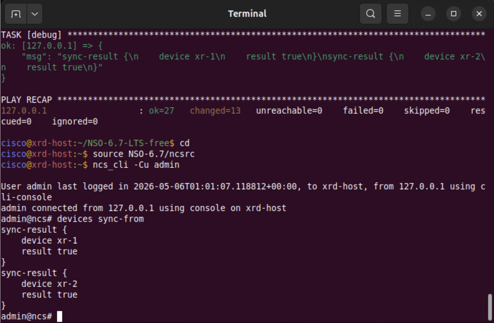
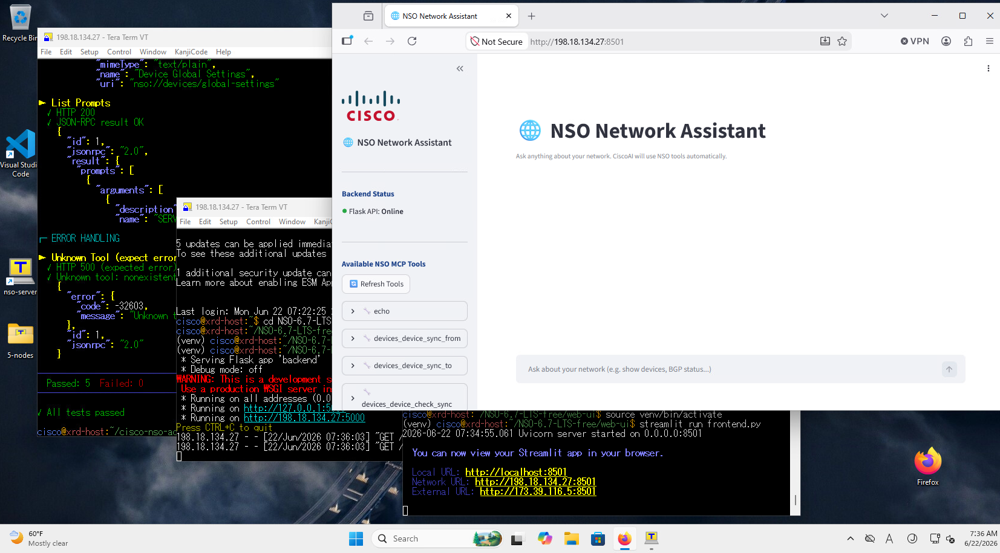
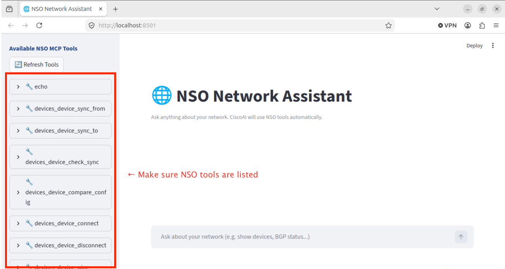
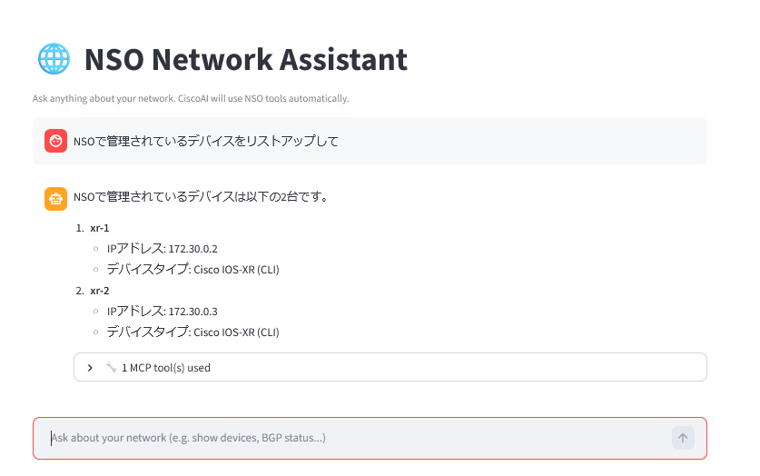
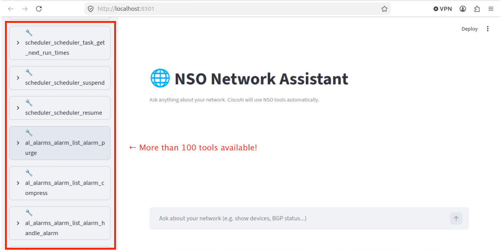
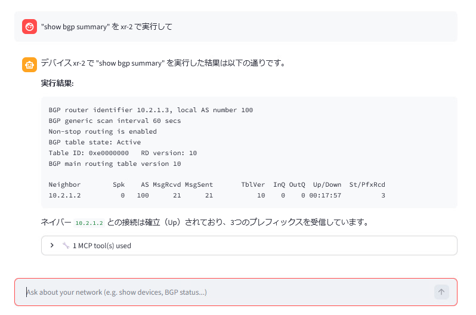

NSO MCP サーバのセットアップ
このセッションでは、NSO 6.7 の新機能であるModel Context Protocol (MCP) サーバーについて、 インストールからセットアップまで行います。
新規にNSO 6.7インスタンスをセットアップし、MCPを通じてそれを公開し、自然言語クライアントでNSOを操作します。これらはすべてdCloudのオールインワンシナリオで行います。
学習目標
このラボを完了すると、以下のことができるようになります。
- MCPが公開する3つの構成要素であるリソース、ツール、プロンプトについて説明する。
- 提供されたAnsibleプレイブックを使用して、dCloudのUbuntuホストにNSO 6.7をインストールし、両方のXRdルータが同期していることを確認する。
- NSO MCPパッケージをインストールし、MCPサーバーを有効にして、同梱の
test-mcp.shスクリプトで検証する（5つのテストすべてに合格すること）。 - サンプルのWeb MCPクライアント（
backend.py+ Streamlitfrontend.py）を起動し、ブラウザを通じて自然言語でNSOと対話する。 - MCPポリシーをデフォルトの
restricted（約11個のツール）からpermit（100個以上のツール）に切り替え、より広範な操作領域を確認する。
MCPとは?
Model Context Protocol (MCP) は、データソースとAIアプリケーション間のユニバーサルトランスレータとして機能します。NSO 6.7 は MCPサーバー として機能し、以下の3つのプリミティブを公開します。
| MCPプリミティブ | NSOが提供するもの |
|---|---|
| リソース (Resources) — スキーマとデータ | global-settings、zombies、デバイス設定およびコンフィギュレーション |
| ツール (Tools) — LLMが呼び出すことができる実行可能な関数 | mcp-policies を介して設定可能（ポリシーが公開するツールを決定します） |
| プロンプト (Prompts) — 事前定義されたテンプレート | NSO MCPサーバーに同梱されている7つのプロンプト |
このラボでは、カスタムの MCPクライアント（手順の後半で使用）がNSOに接続し、Cisco AI を活用してWebブラウザを通じたAIインターフェースを提供します。
手順
ステップ 1: 作業用ホストでターミナルを開く
dCloudシナリオがアクティブになったら、Win11 の VM Console を開きます （Ubuntu を使用していただいても大丈夫です）。

デスクトップ上にある nso-server をクリックして TeraTerm を開きます （Ubuntu の場合はTerminalを開きます）。

ステップ 2: 提供されたAnsibleプレイブックを使用してNSO 6.7をインストールする
以下を実行し NSO のインストールを開始します。
cd ~/NSO-6.7-LTS-free
ansible-playbook nso.yml
プレイブックが完了するまで数分待ちます。NSOが自動的にインストールされます。
完了したら、環境変数を読み込み、NSO CLIを開きます。
cd
source NSO-6.7/ncsrc
ncs_cli -Cu admin
ステップ 3: XRdルータに到達可能であることを確認する
NSO CLI内で、両方のXRdデバイスを同期し、それらが存在することを確認します。
admin@ncs# devices sync-from
admin@ncs# show devices list

いずれかのデバイスの同期に失敗した場合は、ここで停止し、問題を解決してから続行してください。MCPが意味のあるツールを公開するには、正常に動作するデバイスが必要です。
ステップ 4: NSO MCPパッケージをインストールする
MCPパッケージはNSOインストーラバンドルに含まれています。Linuxターミナル（NSO CLIではありません）から、パッケージディレクトリにコピーします。
cd
cp NSO-6.7-LTS-free/work/ncs-6.7-cisco-nso-adaptive-mcp-server-1.0.0.tar.gz ncs-run/packages
次に、NSO CLI でパッケージをリロードし、MCPを有効にします。
ncs_cli -Cu admin
admin@ncs# packages reload
admin@ncs# config
admin@ncs(config)# mcp-server enabled
admin@ncs(config)# commit
admin@ncs(config)# end
ステップ 5: 同梱のテストスクリプトでMCPサーバーを検証する
MCPパッケージには test-mcp.sh テストスクリプトが含まれています。MCPが起動して実行されていることを確認します。
以下のコマンドを Linux ターミナルで実行します。
cd
tar zxvf NSO-6.7-LTS-free/work/ncs-6.7-cisco-nso-adaptive-mcp-server-1.0.0.tar.gz
cd cisco-nso-adaptive-mcp-server
./test-mcp.sh
いずれかのテストが失敗した場合は、NSO CLIに戻って再度 packages reload を実行し、./test-mcp.sh を再実行してください。5つのテストすべてに合格した場合のみ続行してください。

これでNSO MCPの準備が整いました。
ステップ 6: Web MCPクライアント（バックエンド + フロントエンド）を起動する
シナリオにはサンプルのWeb MCPクライアントが含まれています。これは2つのターミナルで2つのプログラムとして実行されます。 Win11 で作業をされている方は NSO とは別にあと 2 つ Teraterm を起動して実施してください。
ターミナル 1 — バックエンド:
cd
cd NSO-6.7-LTS-free/web-ui
source venv/bin/activate
python3 backend.py
ターミナル 2 — フロントエンド:
cd NSO-6.7-LTS-free/web-ui
source venv/bin/activate
streamlit run frontend.py
Ubuntu では Firefoxが自動的に開くはずです。 開かない場合または Win11 の場合は、手動でFirefoxを起動し、http://198.18.134.27:8501/ にアクセスしてください。

Web UIの左側のメニューに NSO MCP tools が表示されていることを確認します。

ステップ 7: 自然言語でNSOを操作する
チャットボックスで、NSOが管理しているデバイスについて簡単な言葉で質問します （例: "NSOで管理されているデバイスをリストアップして。"）。

ステップ 8: MCPポリシーを restricted から permit に変更する
デフォルトでは、セキュリティ上の理由から、アクティブなMCPポリシーは restricted になっており、11個のツールのみを公開します。デフォルトのアクションを permit に切り替えて、より多くのツールを利用できるようにします。
NSO CLIで以下を実行します。
ncs_cli -Cu admin
admin@ncs# config
admin@ncs(config)# mcp-server policies default-action permit
admin@ncs(config)# commit
admin@ncs(config)# end
Web MCPクライアントに戻り、左側のメニューの Refresh tools を押します。これで 100個以上のツール が表示されるはずです。

これで、よりリッチなクエリを実行できるようになります。例えば、デバイスの live-status を表示するようにクライアントに依頼します。
（例: "show bgp summary を xr-2 で実行して"）。

本番環境でのポリシー
permit は、MCP接続の反対側にいるLLMに対して非常に大きな操作領域を公開します。デモやラボのシナリオ以外では、restricted（または手動で厳選したポリシー）を使用してください。
確認
ここまでの手順で、以下の状態になっているはずです。
- UbuntuホストにNSO 6.7 LTSがインストールされ、両方のXRdルータが sync-from: true になっていること
- NSO MCPパッケージがロードされ、実行コンフィギュレーションでMCPサーバーが enabled になっていること
-
./test-mcp.shが 5/5 tests passed を報告していること - Web MCPクライアントが http://198.18.134.27:8501/ で実行され、NSOツールメニューが表示されていること
- MCPポリシーが
permitに切り替わっていること — 左側のメニューのツール数が約11個から 100個以上 に跳ねあがっていること
トラブルシューティング
test-mcp.shが失敗する — NSO CLIでpackages reloadを実行し、完了するまで待ってから、テストスクリプトを再実行してください。- Webクライアントにツールが表示されない — ポリシーがまだ
restrictedになっている可能性があります。mcp-server policies default-action permitがコミットされたことを確認し、Refresh tools を押してください。 - Streamlitのページが読み込まれない —
backend.pyとstreamlit run frontend.pyの両方が、venvがアクティブ化された別々のターミナルタブで実行されていることを確認してください。
よくあるエラー
packages reload の後、./test-mcp.sh で合格するテストが5つ未満になる
MCPパッケージが部分的にしかロードされていません — packages reload が完了する前に mcp-server enabled がコミットされたか、リロードの前にtarボールが ncs-run/packages にコピーされていません。"
NSO CLIで packages reload を再実行し、正常に戻るまで待ってから、再度 ./test-mcp.sh を実行してください。ncs-run/packages 配下にtarボールがない場合は、ステップ 3（cp …adaptive-mcp-server…tar.gz ncs-run/packages）を繰り返してください。
Refresh tools を押しても、Webクライアントに約11個のツールしか表示されない
MCPポリシーがデフォルトの restricted のままであるか、default-action permit のコミットがロールバックされています。
"NSO CLIで show running-config mcp-server policies default-action を実行します。permit と表示されない場合は、ステップ 7 を繰り返してコミットしてください。その後、Webクライアントで Refresh tools を押します。
"Firefoxが http://198.18.134.27:8501/ に到達できない
Streamlitフロントエンド（streamlit run frontend.py）が実行されていないか、そのターミナルでアクティブ化されたvenvが失われています。
フロントエンドのターミナルタブを開き、プロンプトに (venv) があることを確認して、streamlit run frontend.py を再実行してください。バックエンド（python3 backend.py）も独自のタブで実行されている必要があります
次のステップ
このボでは、広範な permit ポリシーでNSO MCPを公開したままにしました。次のシナリオ bgpmgr サービス では、追加のサービスパッケージ（bgpmgr）をロードし、そのツールがMCPクライアントに表示されるのを確認します。そして、自然言語を使用して xr-1 と xr-2 間の BGPを設定 し、2つ目のMCPクライアント（ollmcp）から利用可能なツールとプロンプトを検査します。